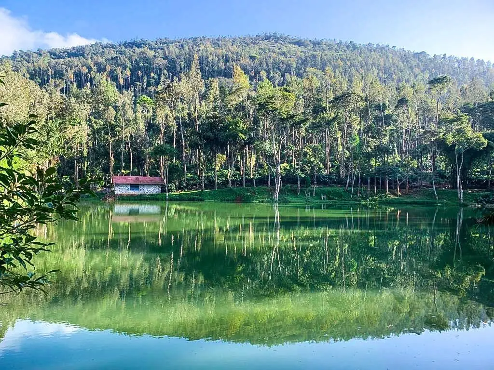
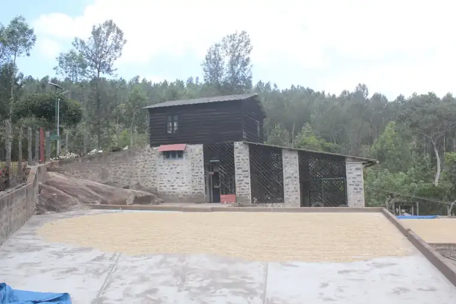
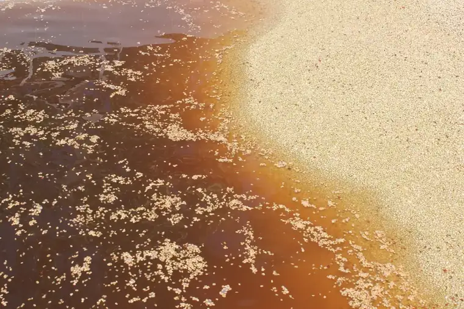

We grow it
Selected mother plants, our own nursery, two tiers of shade, and three estates between 1,250 and 1,450 metres.

MSP Plantations
Cauvery Peak is the coffee of MSP Plantations — a family-owned, professionally managed plantation business in the Shevaroy Hills, now in its fifth generation.
The whole point
Almost no coffee reaches a drinker this way. The usual route runs grower, curer, exporter, importer, roaster — five sets of hands, and at every handover the lot gets blended and the trail goes cold. We removed the route. What is in the bag came off ground we farm, and nobody touched it in between.
Selected mother plants, our own nursery, two tiers of shade, and three estates between 1,250 and 1,450 metres.

Our wet mill, our drying terraces, our dry mill. Cherry is pulped the day it is picked.

On the estate, in small batches, after your order is placed.

Straight from the estate. No warehouse, no middleman, no repacking.
What makes us different
Not a region, not a co-operative, not a blend of whatever the market had. One named property per bag, at a stated elevation.
Roasted where it grew, after you ordered it. Most single-origin coffee is roasted thousands of kilometres from the farm.
We can tell you the block, the picking round and the terrace. Come up the hill and we will show you.